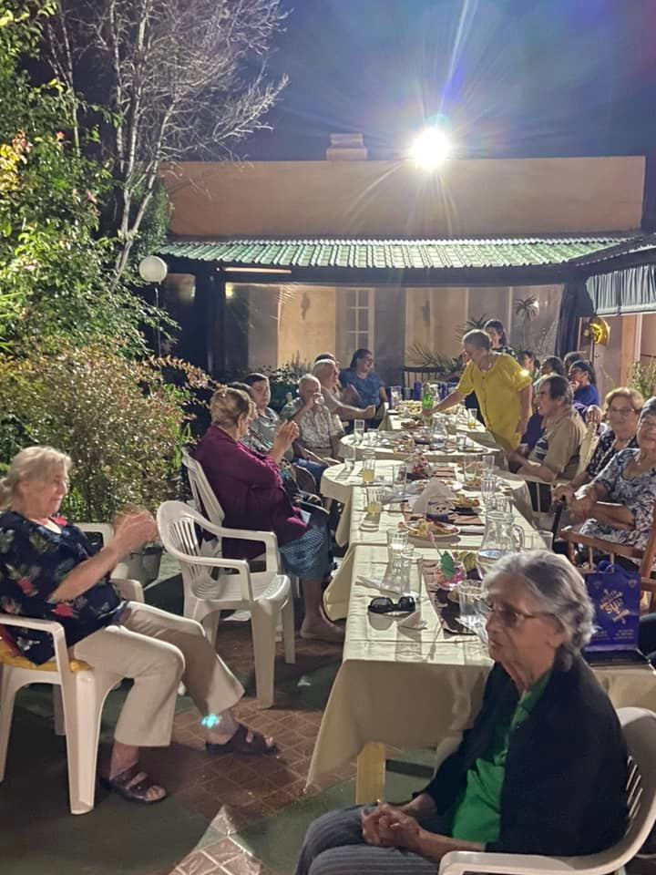

SERVICIOS
-
Actividades y Talleres
Todas nuestras actividades están pensadas para jugar un papel específico en el proceso de adaptación y en la vivencia cotidiana de nuestros residentes.
- Taller de estimulación cognitiva
- Taller de huerta
- Festejos de cumpleaños y fechas conmemorativas
- Actividades ludicas
- Gimnasia funcional



-
Servicios Médicos
- Servicio de enfermeria a demanda 24 horas
- Valoración Geriátrica Integral
- Dirección Técnica Dr. Geriátrica Javier Bessonart
-
Servicios Generales
- Menú incluyendo todos los tipo de macronutrientes necesarios, con supervisión de profesional
- Coorindación de comidas familiares
- Conexión WIFI en todas las salas
- Coorindacion de peluqueria/podologia a demanda contratado por residente
- Directv en todos los espacios comunes y en cada habitación privada de los residentes
- Entretenimientos, cine y diferentes actividades semanales
- Servicio de lavanderia
- Grandes espacios al aire libre e interiores
- Salas acondicionadas termicamente para cada estación del año
- Sesiones de lectura
- Misas